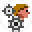
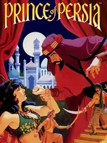

Prince of Persia |
|
| Tiempo de juego | 3m 57s |
| Última actividad | 22/1/2026 18:12:08 |
| Añadido | 21/9/2025 15:47:41 |
| Modificado | 10/12/2025 13:48:20 |
| Estado de finalización | Jugado |
| Librería | Playnite |
| Fuente | |
| Plataforma | PC (Windows) |
| Fecha de lanzamiento | 3/10/1989 |
| Puntuación de la Comunidad | 82 |
| Puntuación de la Crítica | |
| Puntuación de usuario | |
| Género | Adventure Platform Puzzle |
| Desarrollador | Brøderbund Software |
| Editor | Brøderbund Software |
| Característica | Single Player |
| Enlaces | Twitch Official Website Community Wiki Wikipedia |
| Tag | Texto en Inglés |
Este es el Big Bang. El juego que en 1989 inventó un género entero: el "plataformero cinemático". Prince of Persia te tira en un calabozo con una sola misión: rescatar a la princesa en menos de una hora. No hay vidas, no hay continues. Cada salto, cada combate con espada y cada trampa mortal tiene que ser ejecutado a la perfección.
La magia del juego está en sus animaciones increíblemente realistas, logradas con una técnica llamada rotoscopia que le daba una fluidez nunca antes vista. El movimiento es deliberado; no es un juego de correr a lo loco como un Mario. Es un puzzle de precisión y ritmo, una danza mortal donde la paciencia es tu mejor aliada y la memoria muscular tu única salvación. Es áspero, es difícil y es increíblemente satisfactorio.
Ahora, jugar a esta joya del DOS hoy en día puede ser un quilombo. Y ahí es donde entra la magia de la comunidad. La forma definitiva de vivir esta experiencia en una PC es a través de SDLPoP, un port hecho por fans con ingeniería inversa. No es un emulador; es el juego original corriendo de forma nativa en Windows, con soporte para monitores anchos, controles de gamepad y la posibilidad de guardar cuando quieras. Es la versión perfecta: 100% fiel al clásico, 0% de los dolores de cabeza técnicos de 1989.
Prince of Persia no es solo un juego, es una lección de historia. Su ADN está en Tomb Raider, en Assassin's Creed, en cada juego que busca combinar el plataformeo con un movimiento realista. Tenés que jugarlo para entender las raíces de la acción y aventura moderna, y para experimentar un diseño de juego tan puro y exigente que te va a hacer respetar cada pixel. Es una obra de arte fundamental.